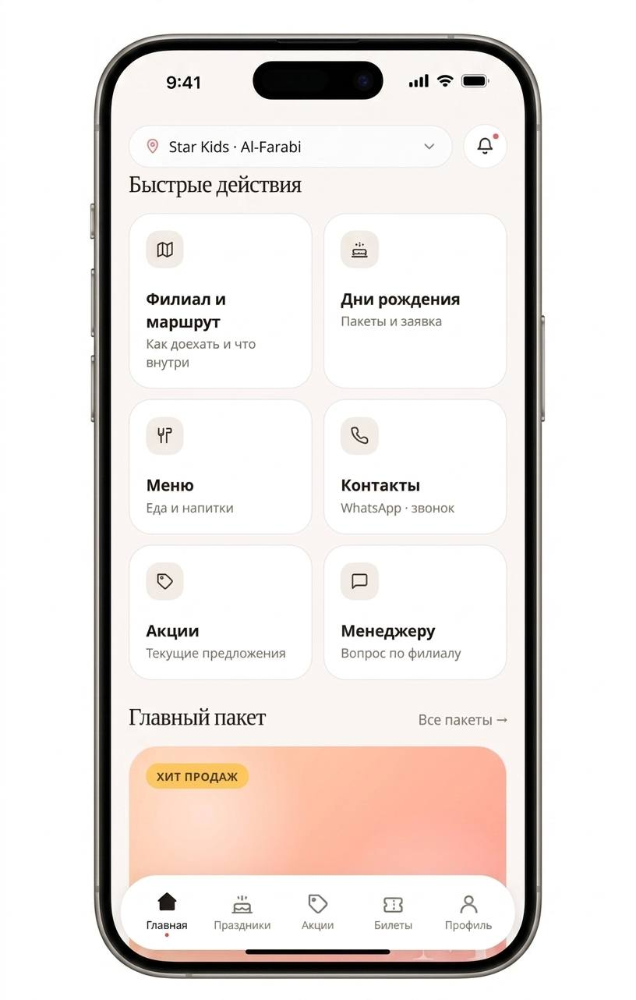

01 / Mobile · Flutter
Star Kids
Пересобрали приложение сети детских центров вокруг реальных сценариев родителей: выбрать филиал, посмотреть пакеты, оставить заявку и пользоваться программой лояльности.
Проблема
Перегруженные экраны и разрозненные сценарии мешали быстро находить главное.
Решение
Новая навигация, спокойная дизайн-система, единые компоненты и микроанимации.
Результат
Цельный Flutter-продукт с основой для дальнейшего развития функций.